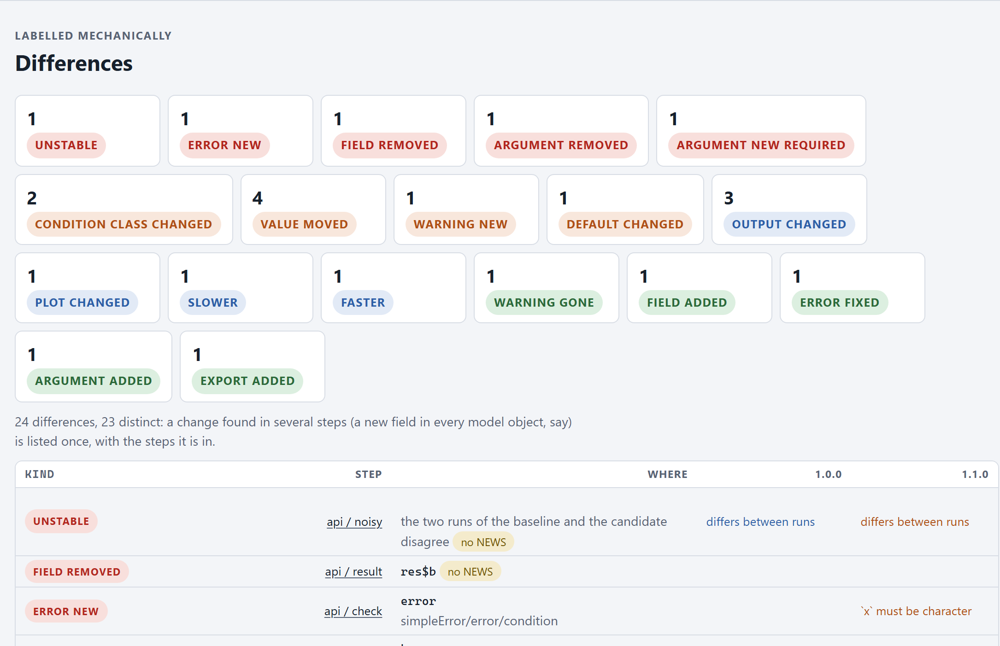

See what your users meet after an upgrade
pak::pak("hdbt/pkgdossier")


example_dossier(), a tiny package bundled with pkgdossier in two versions with one planted difference of each kind.
One call
In your package’s folder, run_dossier() compares the folder with the package’s CRAN release. It installs both versions, runs the release’s vignettes and help-page examples under each, opens the HTML report and prints a summary that starts with a verdict:
pkgdossier::run_dossier()To try it without network access, run the bundled example:
library(pkgdossier)
cmp <- run_dossier(example_dossier())
# what breaks code or moves results
differences(cmp, max_severity = 2)Gallery
What the report shows for example_dossier(), drawn from the same comparison. Select a figure to open it at full size.


Guides
| Guide | What it covers |
|---|---|
| Getting started | A first dossier on the bundled example: run it, read the differences, check them against NEWS. |
| Before a release | Run the dossier on your package, read the verdict, decide about each difference and record the decisions. |
| On pull requests | The GitHub Actions workflow that comments on each pull request and fails when a severe change is neither in NEWS nor accepted. |
| Writing scenarios | Code your users run that neither the vignettes nor the examples show: the README, answers to issues, analyses in papers. |
| Baselines and dependencies | Other baselines than the CRAN release, packages not on CRAN, and the dependency versions both versions run against. |
How it differs
A package’s tests check that each version is consistent with itself, so a change in a default, an estimate or a printed summary passes them as long as the new code agrees with itself. Snapshot tests catch only what a maintainer chose to pin. R CMD check and reverse-dependency checks report whether code runs, not what it now returns.
Other tools compare other things. packageDiff, pkgdiff and diffify compare functions, arguments, dependencies and NEWS between two versions without running any code; revdepcheck runs R CMD check on reverse dependencies and reports whether each passes; waldo compares two R objects. pkgdossier runs the released version’s user-facing code under both versions and reports, step by step, what changed:
- Both versions are built from source, installed in their own libraries and run in fresh R processes, twice each in the order baseline, candidate, candidate, baseline. A step whose results differ between two runs of the same version is set aside as unstable rather than reported as a change.
- Values that change from run to run for reasons unrelated to the package, such as temporary paths and memory addresses, are masked. Numbers are compared with a relative tolerance, and printed output whose only change is digits within it is not labelled.
- Each difference gets one of twenty kinds and a severity. Whether it is intended is left to you: for each one you get the evidence and the NEWS bullets that name a function the step uses.
- Exports and function signatures are compared as well, and the summary lists the exported functions and NEWS bullets that no scenario exercises.
- Results come back as data, as JSON with a published schema and as a standalone HTML report. A Markdown summary and a GitHub Actions workflow bring them to pull requests.
Citation
Bulut H (2026). pkgdossier: Compare What Users Meet Before and After a Package Upgrade. R package version 0.1.0, https://github.com/hdbt/pkgdossier.
citation("pkgdossier") gives the same entry, with a BibTeX version.